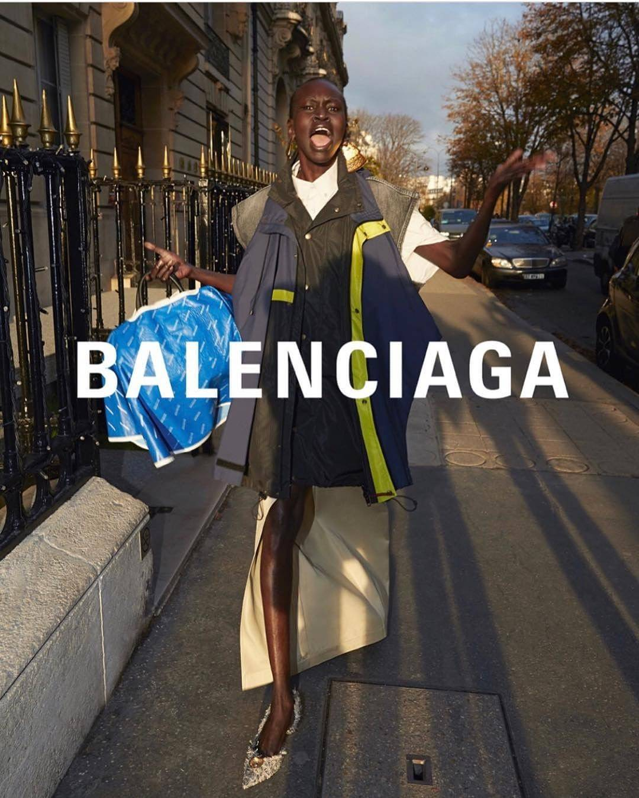
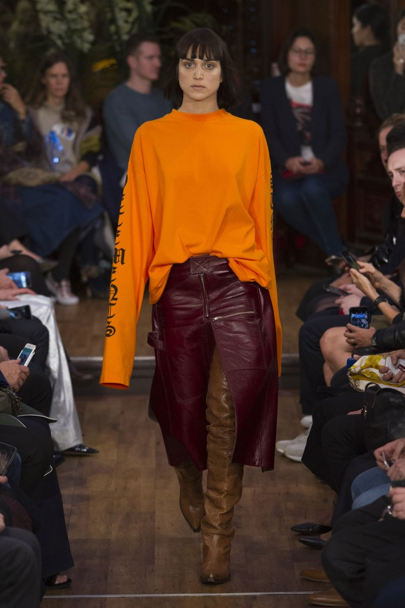
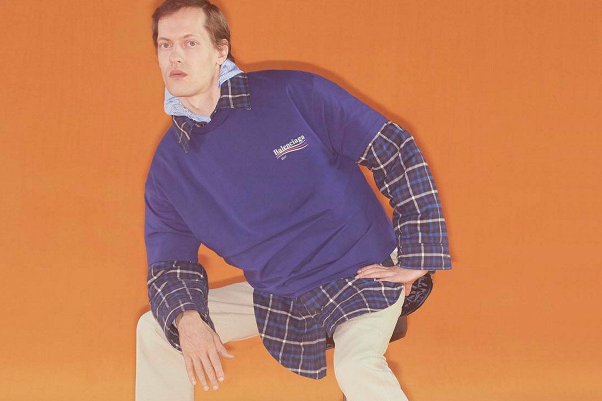
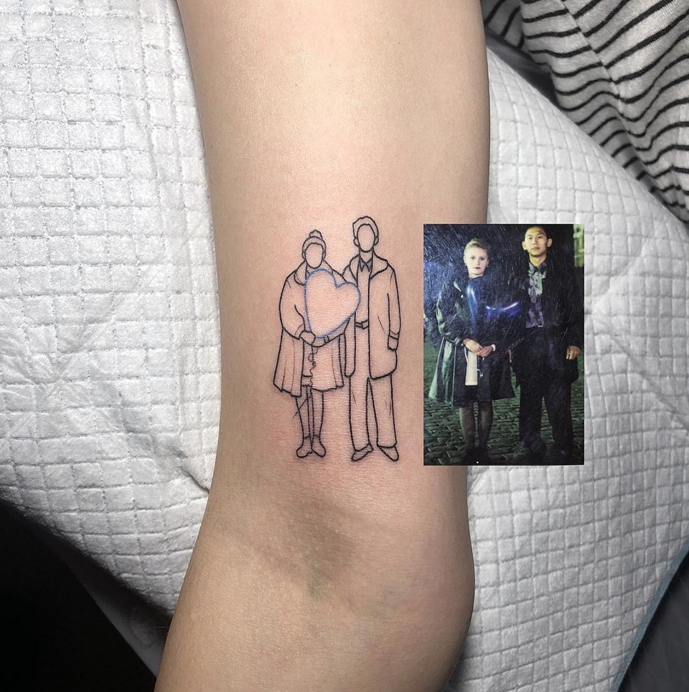
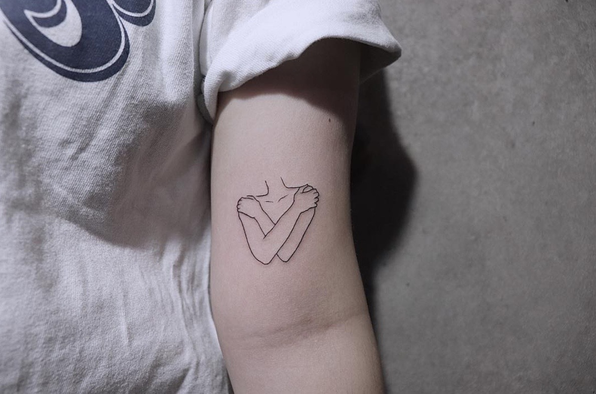
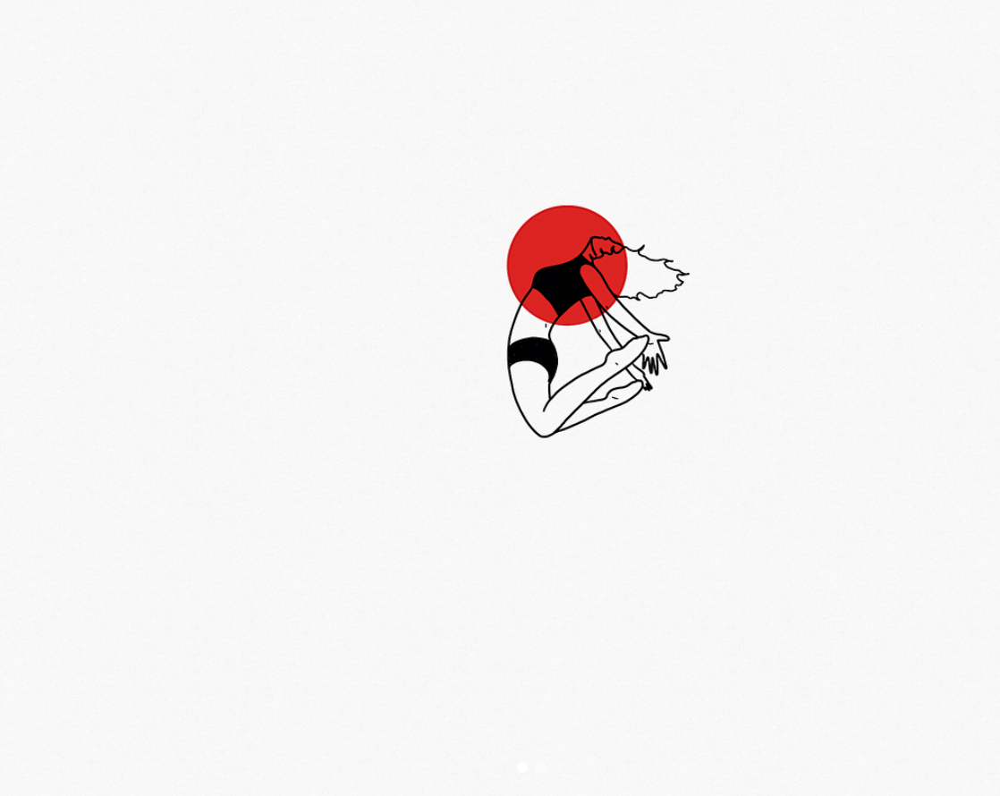

my inspiration

demna gvasalia
gvasalia heads has lead design teams of balenciaga and vetements alike. his designer t-shirts attracts me because of the paradoxical nature of the Balenciaga brand, and how adopting a Bernie Sanders campaign-esque logo, or recreating the imagery of gaudy paparazzi photos, or using purposefully ill-fitting garments all speak to that paradox. Fashion that aspires to look bad to look good; a share the wealth campaign on a 700 dollar t-shirt. Gvasalia captures an irony and contradiction in his design for the collection that produces an allure, a sophistication of the brand name by looking anything but.

@타투어 도기
this tattoo artist has a large following and a good body of work, with a consistent theme being sentimentality. I like the transformative powers of his minimalist linework, the simplicity communicates tones of nostalgia, fragility and a ghostliness so well that his work always ends up on my moodboards